STRATEGY / IDENTITY / EXPERIENCE
Different worlds.
A Pulse through each.
Eleven collaborations.
The thinking, the craft and the work.
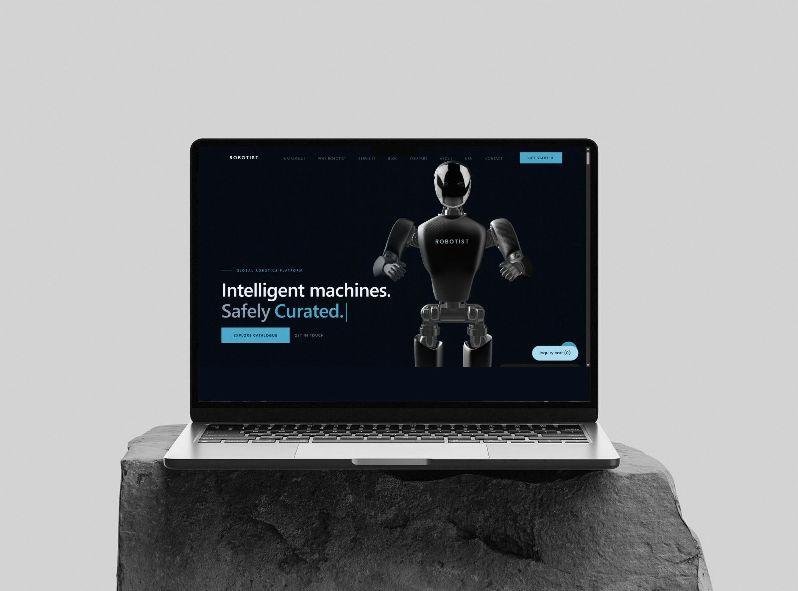
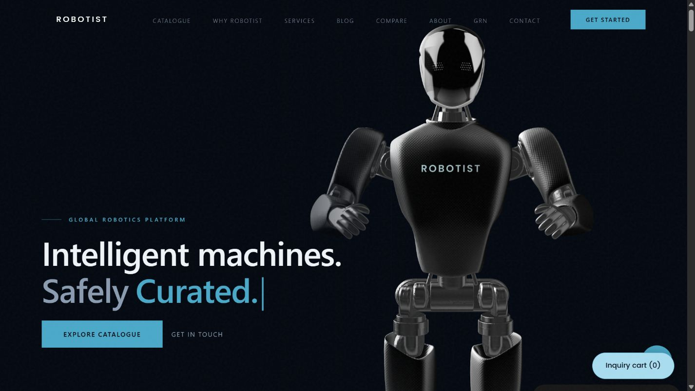
01 / 11
Making robotics
human.
Robotics · Brand & digital
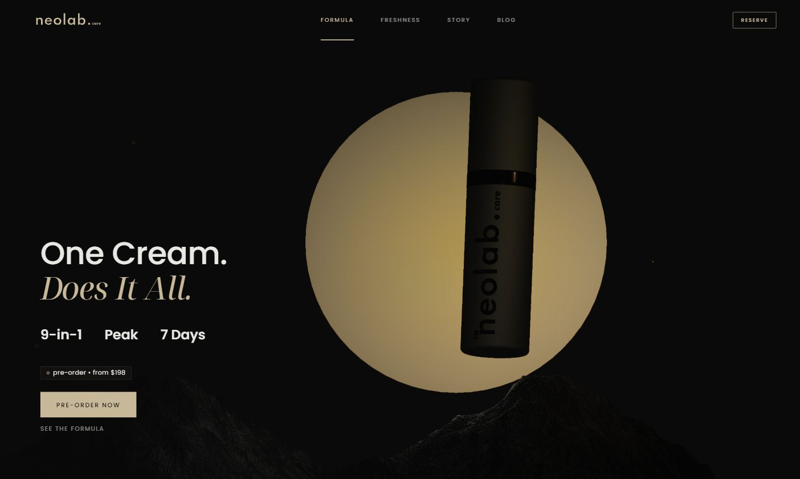
02 / 11
A daily ritual,
reconsidered.
Personal care · Strategy, identity & digital
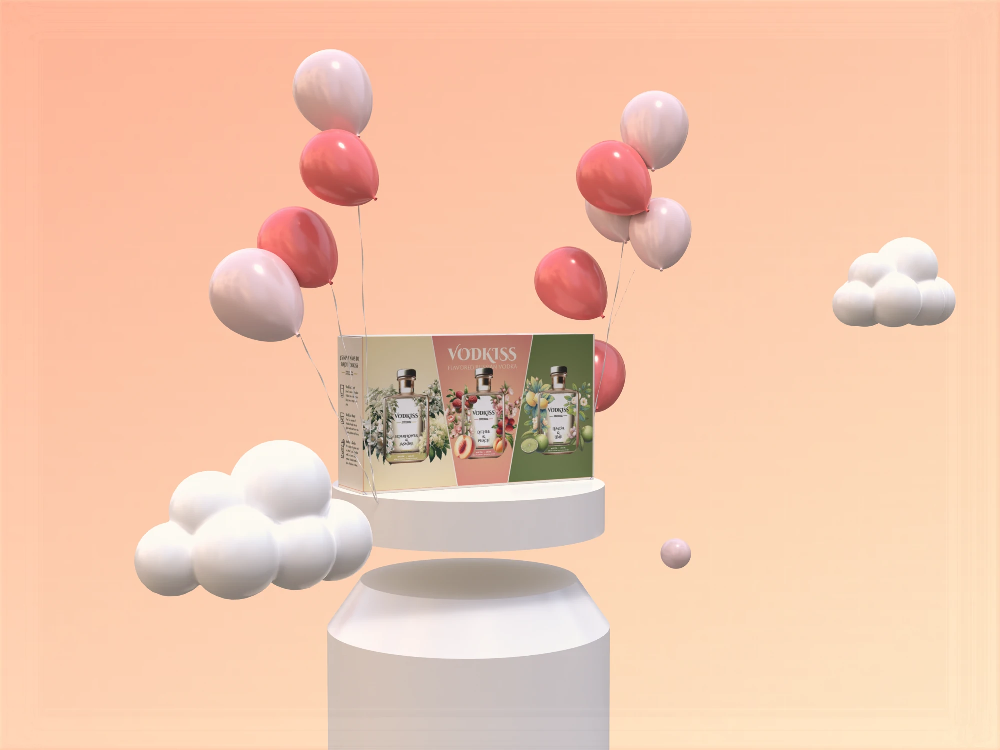
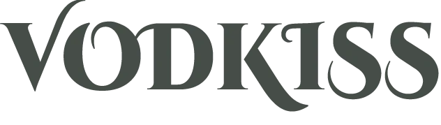
03 / 11A little bottle.
A whole occasion.
Spirits · Identity & packaging
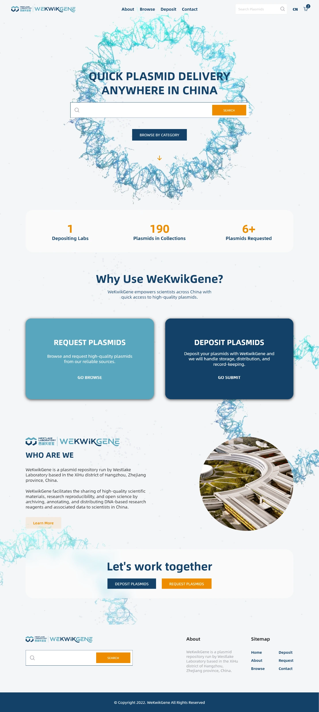
04 / 11
Science,
shared.
Research · Identity & digital platform
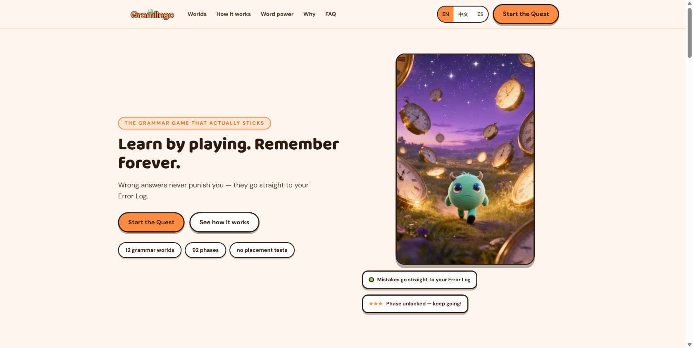
Make room
for play.
Learning · Brand & game experience
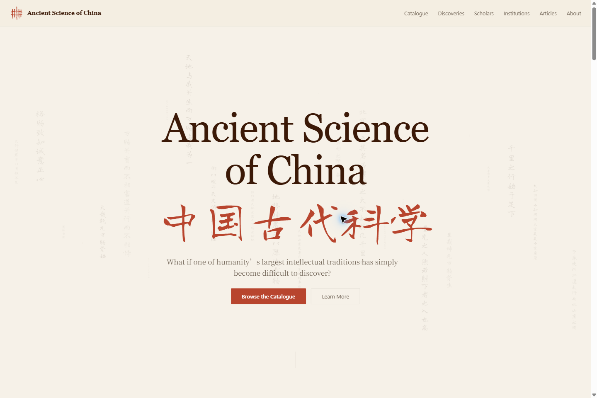
 06 / 11
06 / 11Knowledge,
made discoverable.
Cultural knowledge · Digital experience
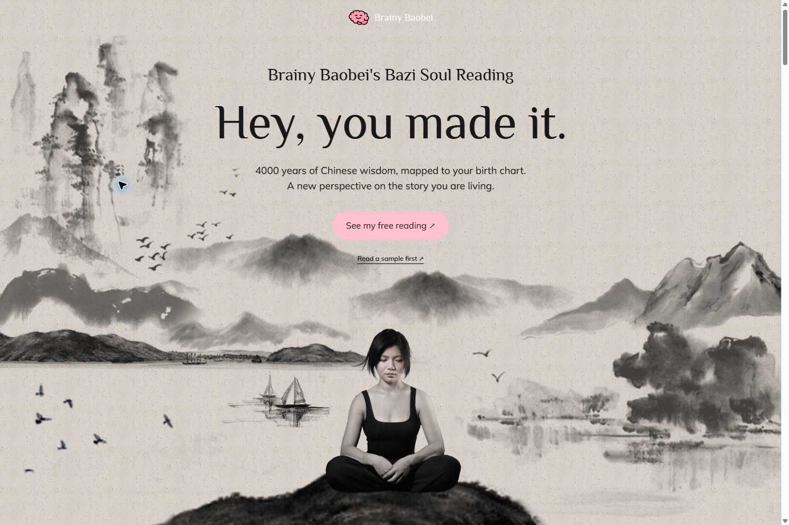
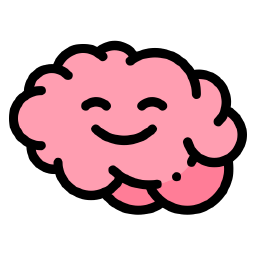
07 / 11A little more
of you.
Self-reflection · Identity & digital experience

08 / 11
From scattered tools
to a shared workspace.
Creative operations · Product & workflow
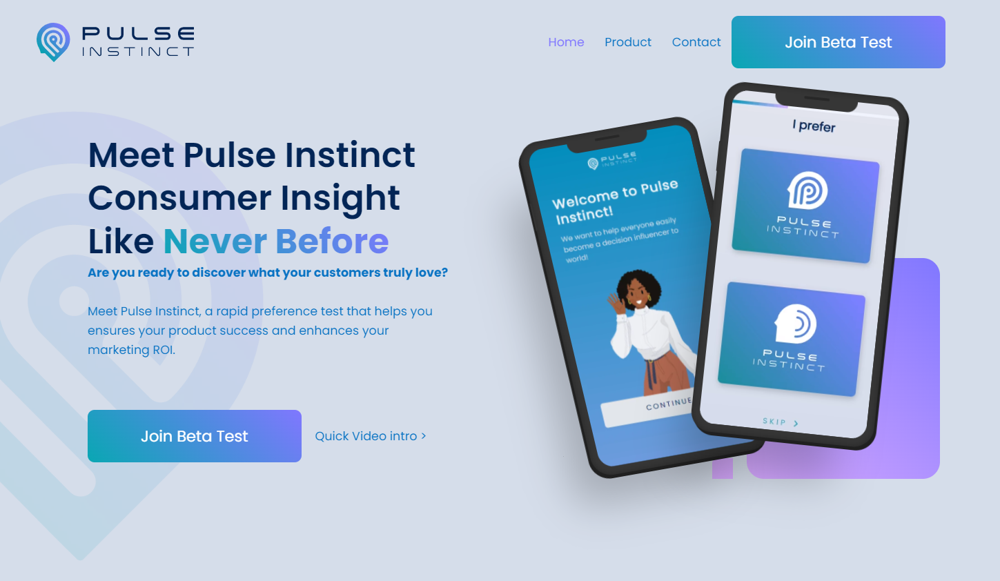
09 / 11
An instinct,
made visible.
Preference research · Identity & product design

10 / 11
A place
for presence.
Companionship · Identity & spatial experience
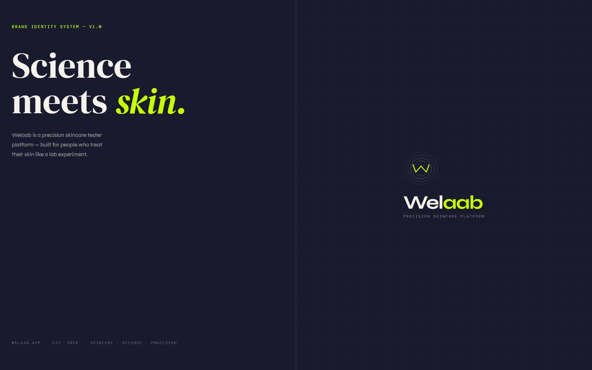
11 / 11
Science,
meets skin.
Skincare · Strategy & identity